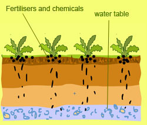
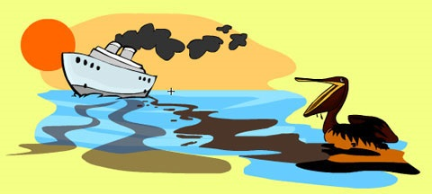

There are many types of water pollution because water comes from many sources. Here are a few types of water pollution:
Nutrients Pollution
Some wastewater, fertilizers and sewage contain high levels of nutrients. If they end up in water bodies, they encourage algae and weed growth in the water. This will make the water undrinkable, and even clog filters. Too much algae will also use up all the oxygen in the water, and other water organisms in the water will die out of oxygen starvation.
Surface water pollution
Surface water includes natural water found on the earth's surface, like rivers, lakes, lagoons and oceans. Hazardous substances coming into contact with this surface water, dissolving or mixing physically with the water can be called surface water pollution.
Oxygen Depleting
Water bodies have micro-organisms. These include aerobic and anaerobic organisms. When to much biodegradable matter (things that easily decay) end up in water, it encourages more microorganism growth, and they use up more oxygen in the water. If oxygen is depleted, aerobic organisms die, and anaerobic organism grow more to produce harmful toxins such as ammonia and sulfides.

Ground water pollution
When humans apply pesticides and chemicals to soils, they are washed deep into the ground by rain water. This gets to underground water, causing pollution underground. This means when we dig wells and bore holes to get water from underground, it needs to be checked for ground water pollution.
Microbiological
In many communities in the world, people drink untreated water (straight from a river or stream). Sometimes there is natural pollution caused by micro-organisms like viruses, bacteria and protozoa. This natural pollution can cause fishes and other water life to die. They can also cause serious illness to humans who drink from such waters.
Suspended Matter
Some pollutants (substances, particles and chemicals) do not easily dissolve in water. This kind of material is called particulate matter. Some suspended pollutants later settle under the water body. This can harm and even kill aquatic life that live at the floor of water bodies.
Chemical Water Pollution
Many industries and farmers work with chemicals that end up in water. This is common with Point-source Pollution. These include chemicals that are used to control weeds, insects and pests. Metals and solvents from industries can pollute water bodies. These are poisonous to many forms of aquatic life and may slow their development, make them infertile and kill them.
Oil Spillage
Oil spills usually have only a localized effect on wildlife but can spread for miles. The oil can cause the death to many fish and get stuck to the feathers of seabirds causing them to lose their ability to fly.

Do you remember the BP Oil spill in 2010?
Over 1,000 animals (birds, turtles, mammals) were reported dead, including many already on the endangered species list. Of the animals affected by the spill, only about 6% have been reported cleaned, but many biologists and other scientists predict they will die too from the stress caused by the pollution.